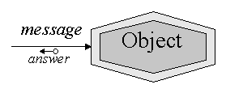
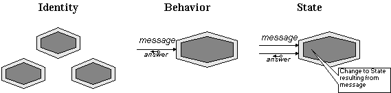
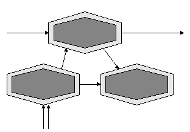
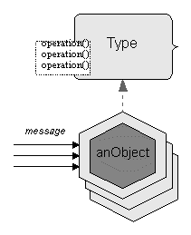
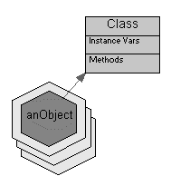
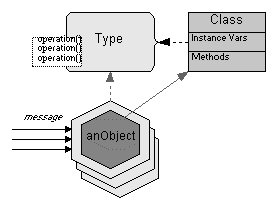
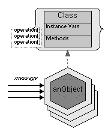

Previous TOC Next
Previous TOC Next 
| ChiMu Publications ChiMu OO and Java Development | Previous TOC Next |
This chapter introduces core concepts to OO and defines terms to provide a common foundation for reading the rest of the resources in this document. OO concepts and terms have been unifying over the last few years, but there are still differences and imprecisions in meanings. This chapter introduces the definitions and priorities for OO concepts that are used in this document and on ChiMu projects. See the resources mentioned in the Overview for a full introduction to OO concepts.
|
The core concept to OO is Objects. Objects are encapsulated entities that can be interacted with only by sending them messages. A Message is a stimulus sent to an object with a name and any parameters (as Objects) that the message requires. A message will cause the receiving Object to return an answer or possibly return nothing. |
 |
Because Objects are encapsulated they have a visible exterior (that to which you can send messages and from which answers are returned) and a hidden interior (the implementation of the functionality). Object’s can also be viewed as having two core properties: Identity and Behavior.
The above are the two core properties to an Object, but it is convenient to add a third (derived) property:

OO is building software out of Objects that send Messages to each other.

All the other concepts in OO are to make understanding, managing, or implementing these Object systems easier. Two of the most important concepts are Types and Classes, but there are many other important concepts, techniques, views, and methodologies that can help in the construction of Object software systems. Types and Classes will be discussed next and some of the other concepts are detailed in the Definitions chapter.
|
Although OO systems can be built out of objects sending messages, any significant sized system would require so many objects that it would be impossible to understand them all individually. To handle this problem we can consider commonality of objects. The most important commonality to identify is a common exterior. This is important because Objects can have many clients (senders of messages) and a simplification of exteriors will benefit them all as well as the implementers of the objects. A Type describes a common exterior of a set of Objects. A Type makes understanding objects easier because their are much fewer Types than Objects (objects are mostly similar to each other), and objects can be grouped and understood by their similar behavior. A Type defines Operations for its set of Objects. An Operation specifies that the object has an ability to respond to a particular message and specifies the contract/requirement for that message (for both the sender and the receiver). An Interface is a description of a Type that only focuses on Operations. |
 |
|
Where Types describe common exteriors of objects, Classes provide a common implementation for similar objects. Classes make it is easier to develop and manage the interiors of objects. A Class has Methods that provide implementations for operations. These methods are shared among all objects (called Instances) that are implemented by that Class. A Class also has Instance Variables, which provide a way to store encapsulated state information for a particular object. Instance variables are completely hidden within the Object, but they enable two objects of the same Class to have different external Behavior. |
 |
|
It is important to conceptually separate Classes from Types even though it is a common (bad) practice to use the term Class for both ideas. Types describe common exteriors of objects, classes provide a common implementation of objects. Neither of these are required for OO systems (some OO languages have one, the other, or neither), but both can be very useful for both understanding and managing a system’s design and implementation. |
 |
|
Java supports both Types and Classes through Java interfaces and Java classes. Java interfaces are a close equivalent to a Type: They specify the operations an Object understands, but do not restrict how those operations are implemented. Java interfaces support multiple inheritance and a Java class can implement multiple interfaces at one time. Java classes are a Type (an exterior) combined with a Class (an implementation): A Java class can be used to specify the operations an object understands, but it also provides an implementation of the operations (or restricts the implementations to inherit from the specifying Java class). Java classes only support single inheritance and Java interfaces can not "extend" a Java class. |
 |
Java does not have a very sophisticated OO type model (no covariant or contravariant overrides) and Java also incorporates many non-OO features like primitive data types and static (compile-time bound) "methods". These limitations and non-OO features can distract or interfere with building good OO systems, so developers have to make extra efforts.
The above is meant to be some basic definitions for OO that are very important and make understanding the subsequent guidelines and other resources a bit easier. For more information about other important OO concepts and more detailed explanations of the above concepts, see the references in the Guidelines, Definitions, and the References chapters.
 |
Previous TOC Next | |
| Copyright (c) 1997, ChiMu Corporation. All Rights Reserved. |